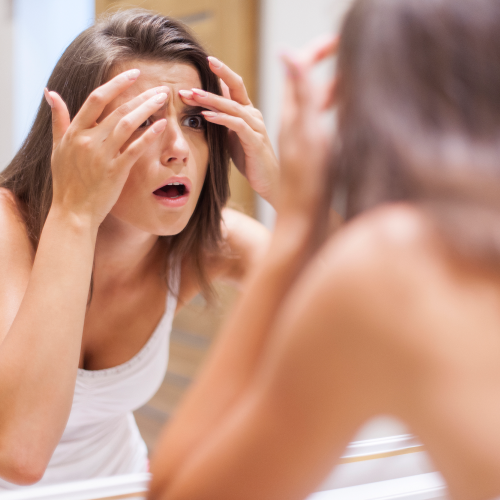

Акне та стрес
Давайте з вами поговоримо про акне та стрес, але з точки зору науки, а це не пусті балачки! Вся справа в гормонах!
Кортизол - глюкокортикоїдний стероїдний гормон, що виробляється нашими залозами. Його також прийнято називати «гормоном стресу», оскільки він активно виробляється у відповідь на стрес. Гормон кортизол є важливим елементом нашого здоров’я та життєдіяльності, бо він відповідає за забезпечення організму енергією. Зранку його рівень найвищий, саме тоді в нас багато сил та енергії, до кінця дня рівень падає і ми відчуваємо втому. Принамні так повинно відбуватись у здорової людини. Чудовий гормон, правда ж ?
Але, основний фактор, який спричиняє надмірне вироблення кортизолу - це стрес(відчуття тривоги, тривожні думки, стресові ситуації). За добу в звичайної людини кортизол виробляється в кількості 15-30 мг, а під час стресу цей показник піднімається до ... Що ж тоді відбувається? Ряд негативних наслідків: руйнування м‘язовоі тканини, ламкість кісток , збільшення жирової тканини, особливо в зоні живота (хмммм, тоді в чоловіків не «пивний живіт», а «стресовий живіт» ), зниження тестостерону, тахікардія, порушення травлення, агресивність, порушення роботи щитоподібної залози. Звісно, не все відбувається одразу, цей процес може тривати роками. В стані стресу кортизол виробляється надміру, оскільки організм хоче захистись, відбувається надмірне вироблення шкірного сала, тому наша шкіра не має змоги так швидко самоочищуватись та відновлюватись . Як наслідок, закупорення пор та запальні процеси з’являються миттєво . Також доведено, що високий рівень кортизолу впливає на захисний бар’єр нашої шкіри, загоювання постакне інколи практично не відбувається. Бар’єр шкіри в такому випадку або відсутній, або мінімальний. І це не просто через стрес, це очікуваний наслідок.
Досить часто високий рівень кортизолу буває в людей, які не дотримуються «біологічного годинника». Природа нам дала режим : «лягай спати об 10-11 вечора, в цей час твоє тіло випрацьовує мелатонін - один із щитів захисту твого організму». Тепер питання: «о котрій годині лягаєте спати ви? І більшість із нас значно пізніше ...Внаслідок такого режиму сну наш організм відчуває тривогу за своє здоров’я і виробляє нам кортизол інколи навіть серед ночі. Прокидалися вночі від пришвидшеного серцебиття, або відчуття, що станеться щось погане (відчуття тривоги)? Загалом гормони- це цілий механізм, який працює як ланцюжок, і варто лише одному випасти з рівноваги, або влізти туди, де він не має бути - наш організм дає збій!
Як з цим боротись? Чарівної таблетки немає! Корекція способу життя – чи не єдиний варіант. Як мінімум, давайте разом відрегулюємо наш сон, щось змінимо в житті, подумаємо про себе. Здорова, красива дівчина чи жінка - це не ваша забаганка , це природня потреба!